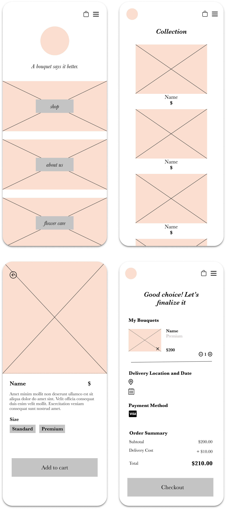
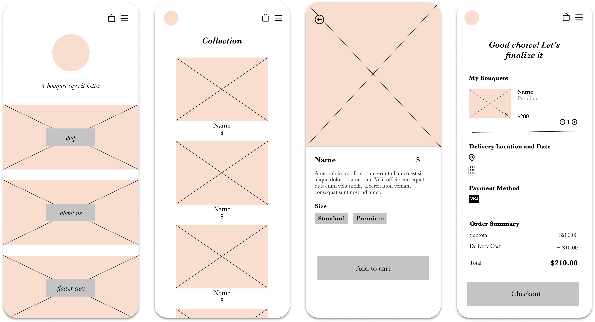

To design a website for a starting flower boutique in Toronto, Ontario. Due to the pandemic, the project was put on pause, however, the project began with designing a mobile version of a site that was to be redesigned for desktop.
The building of the brand began a while ago, and I was part of the team from the beginning of the development of the idea. Being on the team from the very beginning allowed to me to get a better understanding of what the boutique’s online presence was to look like and feel like to users.
I began with examining other flower boutiques sites and user flows. For both the sake of inspiration, and seeing what worked well and what didn’t from the perspective of a user.
After discussing with the team what information was to be displayed on the website, I created a LoFi prototype for the mobile website.
 Following the wireframes, I began developing a high fidelity prototype for the website. The images used we not ones finalized by the boutique but served as an example of what the visuals of the site would look like if it were complete.